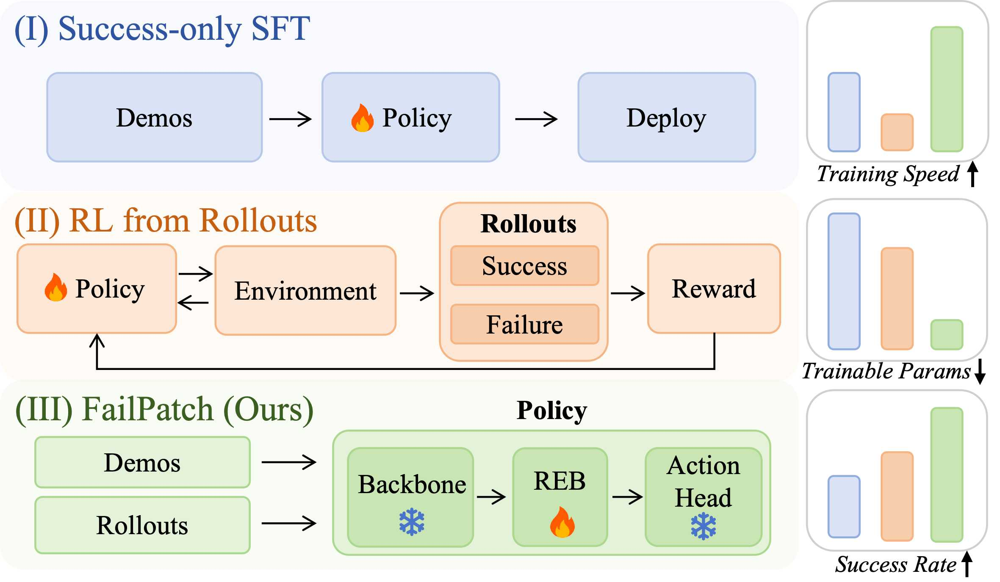

FailPatchAbout Me
I am a PhD student in Artificial Intelligence at Xi'an Jiaotong University, advised by Prof. Hongbin Sun and Prof. Xuchong Zhang. My research interests include embodied AI, recursive self-improvement, and computer vision.
I am interested in building adaptive agents that can learn from interaction, diagnose their own failures, and improve reliably in open environments. Before beginning my PhD in 2024, I received my B.S. in Mathematics and Applied Mathematics from Xi'an Jiaotong University.
Advisors: Hongbin Sun and Xuchong Zhang.
Embodied AI
Recursive Self-Improvement
Computer Vision
News
- FailPatch was released on arXiv with its project page and repository.
- Started a research internship at Dexmal.
- Started my PhD in Artificial Intelligence at Xi'an Jiaotong University.
Publications
Full list on Google Scholar ↗Learn, Practice, and Review: A Cognitive-Inspired Single-Stage Framework for Efficient Domain Adaptive Object Detection
IEEE Transactions on Circuits and Systems for Video Technology, 2026
BAP-DETR: Efficient Drone Object Detection Network Based on Bipartite Attentive Processing and Dual Fusion Encoder
Computer Vision and Image Understanding, 2025
MFF-DCNet: A Network with Multi-Feature Focus and Depth-wise Cross-stage Transformer for UAV Infrared Small Object Detection
IEEE Internet of Things Journal, 2025
Review of Research Progress on Self-training for Object Detection in Unmanned System Perception
SCIENTIA SINICA Informationis, 2025
IRSO-YOLO: An Improved Infrared Small Object Detection Algorithm Based on YOLOv8
9th International Conference on Vision, Image and Signal Processing, 2025
Experience & Education
Research Intern
Dexmal
PhD in Artificial Intelligence
Xi'an Jiaotong University
B.S. in Mathematics and Applied Mathematics
Xi'an Jiaotong University